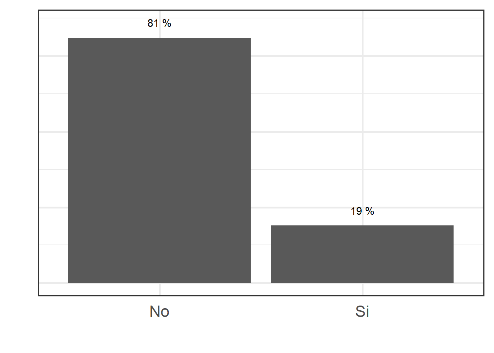
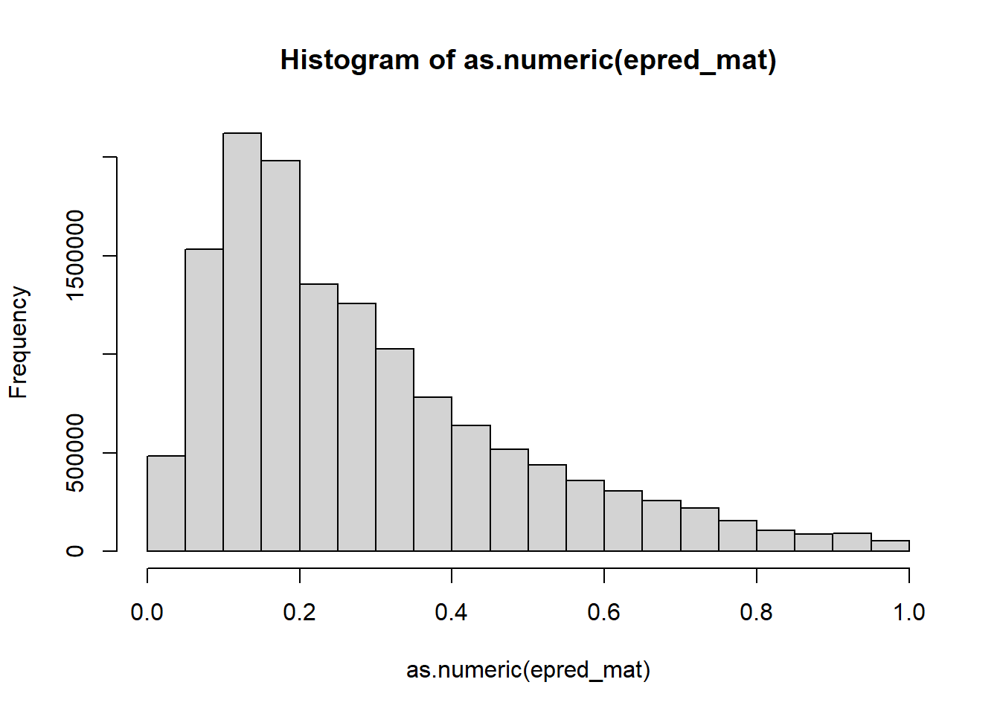
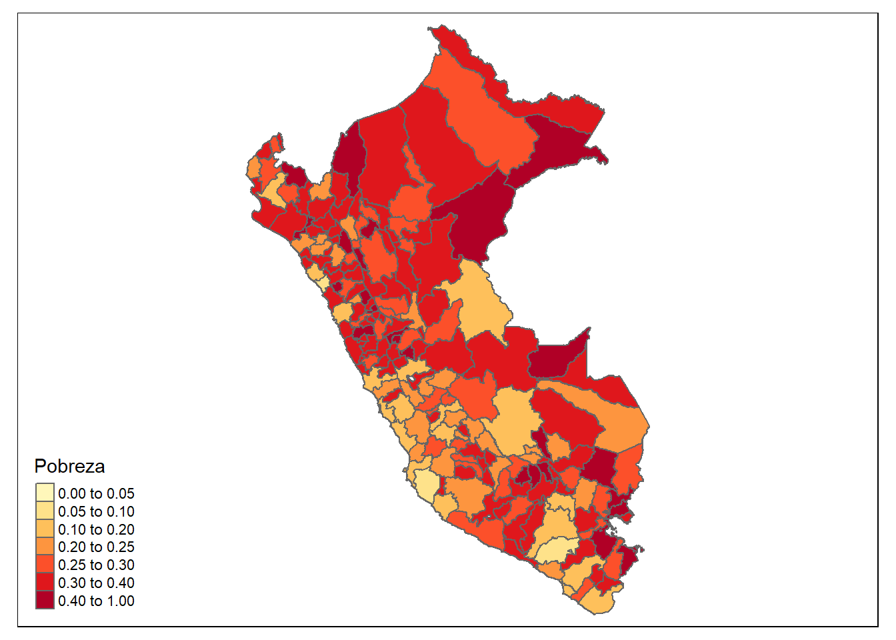
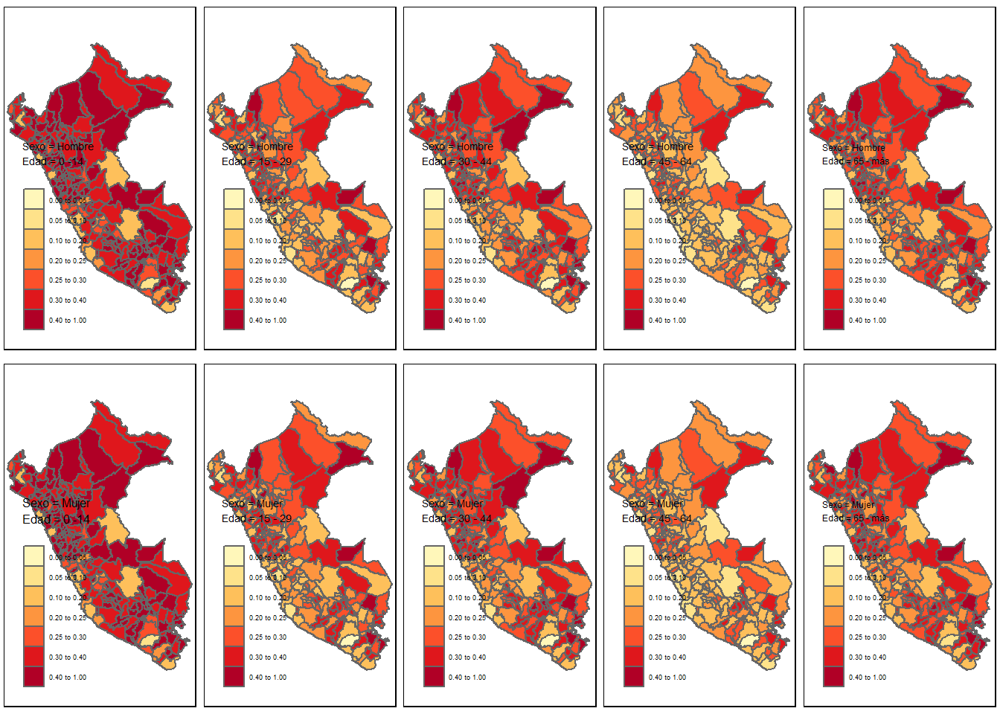

# Interprete de STAN en R
library(rstan)
library(rstanarm)
# Manejo de bases de datos.
library(tidyverse)
# Gráficas de los modelos.
library(bayesplot)
library(patchwork)
# Organizar la presentación de las tablas
library(kableExtra)
library(printr)Estimación de la tasa de probreza
CEPAL - División de Estadísticas Sociales
Lo primero a tener en cuenta, es que no se debe usar una regresión lineal cuando se tiene una variable de tipo binario como variable dependiente, ya que no es posible estimar la probabilidad del evento estudiado de manera directa, por esta razón se emplea una regresión logística, en la que para obtener las estimaciones de la probabilidad del evento estudiado se debe realizar una transformación (logit), lo cual consiste en tomar el logaritmo de la probabilidad de éxito entre la probabilidad de fracaso, de la siguiente manera:
\[ \ln \frac{p}{1-p} \] donde \(p\) representa la probabilidad de éxito del evento.
Modelo de regresión logistica.
Sea \[ y_{ji}=\begin{cases} 1 & w_{ji}\le lp\\ 0 & e.o.c. \end{cases} \] donde \(w_{ji}\) representa el ingreso de la \(i\)-ésima persona en el \(j\)-ésimo post-estrato y \(lp\) es un valor limite, en particular la linea de pobreza. Empleando un modelo de regresión logística de efecto aleatorios pretende establecer la relación entre la expectativa \(\rho_{di}\) de la variable dicotómica con las covariables de información auxiliar disponibles para ser incluidas. El procedimiento correspondiente a este proceso, modela el logaritmo del cociente entre la probabilidad de estar por debajo de la linea de pobreza a su complemento en relación al conjunto de covariables a nivel de unidad, \(x_{ji}\), y el conjunto de covariables a nivel de provicia, \(z_d\).
\[ \begin{eqnarray*} \ln\left(\frac{\rho_{ji}}{1-\rho_{ji}}\right)=\boldsymbol{x}_{ji}^{t}\boldsymbol{\beta}+\boldsymbol{z}_{d}\boldsymbol{\gamma} \end{eqnarray*} \]
Donde los coeficientes \(\boldsymbol{\beta}\) hacen referencia a los efectos aleatorios de las variables \(x_{ji}^t\) sobre las probabilidades de que la \(i\)-ésima persona este por debajo de la linea de pobreza; por otro lado, los coeficientes \(\boldsymbol{\gamma}\) expresan los efectos fijos sobre las covariables a nivel provincia, \(z_d\).
Para este caso se asumen las distribuciones previas
\[ \begin{eqnarray*} \beta_k & \sim & N(0, \tau^2_0)\\ \gamma_d &\sim & N(0,\tau^2_1) \end{eqnarray*} \] las cuales se toman no informativas.
A continuación se muestra el proceso realizado para la obtención de la predicción de la tasa de pobreza por provincia.
Proceso de estimación en R
Para desarrollar la metodología se hace uso de las siguientes librerías.
Un conjunto de funciones desarrolladas para realizar de forma simplificada los procesos están consignadas en la siguiente rutina.
source("0Recursos/0Funciones/funciones_mrp.R")Entre las funciones incluidas en el archivo encuentra
plot_interaction: Esta crea un diagrama de lineas donde se estudia la interacción entre las variables, en el caso de presentar un traslape de las lineas se recomienda incluir el interacción en el modelo.
Plot_Compare Puesto que es necesario realizar una homologar la información del censo y la encuesta es conveniente llevar a cabo una validación de las variables que han sido homologadas, por tanto, se espera que las proporciones resultantes del censo y la encuesta estén cercanas entre sí.
Aux_Agregado: Esta es función permite obtener estimaciones a diferentes niveles de agregación, toma mucha relevancia cuando se realiza un proceso repetitivo.
Las funciones están diseñada específicamente para este proceso
Encuesta de hogares
Los datos empleados en esta ocasión corresponden a la ultima encuesta de hogares, la cual ha sido estandarizada por CEPAL y se encuentra disponible en BADEHOG
encuesta <- readRDS("../Data/encuestaPER21N.rds")
encuesta_mrp <- encuesta %>%
transmute(
depto,
provi = substr(ubigeo,1,4),
pobreza = ifelse(ingcorte < lp,1,0),
area = case_when(areageo2 == 1 ~ "1", TRUE ~ "0"),
sexo = as.character(sexo),
anoest = case_when(
edad < 4 | anoest == -1 ~ "98" , #No aplica
anoest == 99 ~ "99", #NS/NR
anoest == 0 ~ "1", # Sin educacion
anoest %in% c(1:6) ~ "2", # 1 - 6
anoest %in% c(7:12) ~ "3", # 7 - 12
anoest > 12 ~ "4", # mas de 12
TRUE ~ "Error" ),
edad = case_when(
edad < 15 ~ "1",
edad < 30 ~ "2",
edad < 45 ~ "3",
edad < 65 ~ "4",
TRUE ~ "5"),
etnia = case_when(
etnia_ee == 1 ~ "1", # Indigena
etnia_ee == 2 ~ "2", # Negro Mulato Afroperuano
TRUE ~ "3"), # Otro
fep = `_fep`
)
tba(encuesta_mrp %>% head(10)) | depto | provi | pobreza | area | sexo | anoest | edad | etnia | fep |
|---|---|---|---|---|---|---|---|---|
| 01 | 0101 | 0 | 1 | 1 | 4 | 4 | 3 | 72.5634 |
| 01 | 0101 | 0 | 1 | 2 | 3 | 2 | 3 | 72.5634 |
| 01 | 0101 | 0 | 1 | 1 | 4 | 4 | 3 | 72.5634 |
| 01 | 0101 | 0 | 1 | 2 | 4 | 4 | 3 | 72.5634 |
| 01 | 0101 | 0 | 1 | 1 | 4 | 2 | 3 | 72.5634 |
| 01 | 0101 | 0 | 1 | 1 | 2 | 5 | 3 | 72.5634 |
| 01 | 0101 | 0 | 1 | 2 | 2 | 5 | 3 | 72.5634 |
| 01 | 0101 | 0 | 1 | 2 | 1 | 4 | 3 | 477.3727 |
| 01 | 0101 | 0 | 1 | 2 | 4 | 3 | 3 | 477.3727 |
| 01 | 0101 | 0 | 1 | 1 | 3 | 4 | 3 | 477.3727 |
La base de datos de la encuesta tiene la siguientes columnas:
depto: Corresponde al código asignado a la segunda división administrativa del país.
provi: Corresponde al código asignado a la tercera división administrativa del país.
*lp* y *li* lineas de pobreza y pobreza extrema definidas por CEPAL.*área* división geográfica (Urbano y Rural).*sexo* Hombre y Mujer.*etnia* En estas variable se definen tres grupos: afrodescendientes, indígenas y Otros.Años de escolaridad (*anoest*)Rangos de edad (*edad*)Factor de expansión por persona (*fep*)
Ahora, inspeccionamos el comportamiento de la variable de interés:
tab <- encuesta %>% group_by(pobreza) %>%
tally() %>%
mutate(prop = round(n/sum(n),2),
pobreza = ifelse(pobreza == 1, "Si", "No"))
ggplot(data = tab, aes(x = pobreza, y = prop)) +
geom_bar(stat = "identity") +
labs(y = "", x = "") +
geom_text(aes(label = paste(prop*100,"%")),
nudge_y=0.05) +
theme_bw(base_size = 20) +
theme(axis.text.y = element_blank(),
axis.ticks = element_blank())
La información auxiliar disponible ha sido extraída del censo e imágenes satelitales
statelevel_predictors_df <- readRDS("../Data/statelevel_predictors_df_provi.rds") %>%
mutate_at(.vars = c("F182013_stable_lights",
"X2016_crops.coverfraction",
"X2016_urban.coverfraction",
"X2016_gHM",
"accessibility",
"accessibility_walking_only"),
function(x) scale(x)*2+5)
tba(statelevel_predictors_df %>% head(10))| provi | F182013_stable_lights | X2016_crops.coverfraction | X2016_urban.coverfraction | X2016_gHM | accessibility | accessibility_walking_only | area1 | sexo2 | edad2 | edad3 | edad4 | edad5 | etnia2 | discapacidad1 | anoest2 | anoest3 | anoest4 | etnia1 | tiene_alcantarillado | tiene_electricidad | tiene_acueducto | tiene_gas | tiene_internet | piso_tierra | material_paredes | material_techo | rezago_escolar | alfabeta | tasa_desocupacion |
|---|---|---|---|---|---|---|---|---|---|---|---|---|---|---|---|---|---|---|---|---|---|---|---|---|---|---|---|---|---|
| 0101 | 4.319564 | 4.300284 | 4.645889 | 4.079318 | 4.449015 | 4.461542 | 0.8075 | 0.5048 | 0.2578 | 0.2115 | 0.1811 | 0.0865 | 0.0230 | 0.0966 | 0.3304 | 0.2683 | 0.2420 | 0.0654 | 0.5322 | 0.4375 | 0.4366 | 0.3128 | 0.8924 | 0.2955 | 0.8253 | 0.3653 | 0.3110 | 0.0621 | 1e-04 |
| 0102 | 4.340772 | 3.673512 | 4.684831 | 4.923000 | 4.824968 | 4.736494 | 0.5093 | 0.4965 | 0.2400 | 0.1973 | 0.1659 | 0.0564 | 0.0210 | 0.0722 | 0.3556 | 0.2896 | 0.1313 | 0.1957 | 0.6587 | 0.4695 | 0.4447 | 0.5180 | 0.9536 | 0.4648 | 0.8120 | 0.3634 | 0.1829 | 0.1052 | 1e-04 |
| 0103 | 4.111611 | 3.594581 | 4.337569 | 3.701603 | 4.617768 | 4.556194 | 0.6117 | 0.4968 | 0.2253 | 0.2101 | 0.1934 | 0.0815 | 0.0253 | 0.1166 | 0.4277 | 0.2822 | 0.0983 | 0.0254 | 0.5957 | 0.4501 | 0.4463 | 0.4068 | 0.9702 | 0.3730 | 0.8530 | 0.3398 | 0.1322 | 0.0898 | 0e+00 |
| 0104 | 4.045684 | 3.453666 | 4.338233 | 6.700261 | 6.112163 | 5.965704 | 0.1543 | 0.5017 | 0.2355 | 0.1711 | 0.0991 | 0.0185 | 0.0063 | 0.0196 | 0.4108 | 0.2381 | 0.0544 | 0.5052 | 0.9565 | 0.8547 | 0.8237 | 0.8453 | 0.9943 | 0.5861 | 0.9758 | 0.8008 | 0.1032 | 0.1427 | 1e-04 |
| 0105 | 4.113400 | 4.795674 | 4.456282 | 4.599296 | 4.461047 | 4.481397 | 0.4303 | 0.4876 | 0.2116 | 0.1917 | 0.1799 | 0.0991 | 0.0142 | 0.1047 | 0.4546 | 0.2465 | 0.0687 | 0.0217 | 0.6439 | 0.3981 | 0.4322 | 0.5217 | 0.9796 | 0.5806 | 0.9758 | 0.3009 | 0.0929 | 0.1344 | 0e+00 |
| 0106 | 4.088941 | 3.367801 | 4.279733 | 3.555281 | 4.520254 | 4.483412 | 0.3225 | 0.4790 | 0.2053 | 0.2050 | 0.1851 | 0.0902 | 0.0218 | 0.1014 | 0.4793 | 0.2349 | 0.0847 | 0.0142 | 0.6401 | 0.4267 | 0.4567 | 0.5891 | 0.9788 | 0.4559 | 0.8709 | 0.2656 | 0.1135 | 0.0872 | 0e+00 |
| 0107 | 4.513583 | 5.129584 | 4.922235 | 5.942610 | 4.643183 | 4.545732 | 0.5095 | 0.4879 | 0.2428 | 0.2101 | 0.1649 | 0.0689 | 0.0365 | 0.0891 | 0.3950 | 0.2873 | 0.1064 | 0.0219 | 0.6815 | 0.3787 | 0.4022 | 0.4910 | 0.9555 | 0.4649 | 0.8787 | 0.2394 | 0.1321 | 0.1218 | 1e-04 |
| 0201 | 5.050272 | 4.691542 | 5.059867 | 4.076027 | 4.428592 | 4.439321 | 0.7881 | 0.5069 | 0.2606 | 0.2201 | 0.1764 | 0.0855 | 0.0011 | 0.1030 | 0.2408 | 0.2931 | 0.2877 | 0.4472 | 0.4431 | 0.3496 | 0.3304 | 0.3475 | 0.7439 | 0.2657 | 0.6684 | 0.2896 | 0.3701 | 0.0853 | 3e-04 |
| 0202 | 4.091090 | 3.457121 | 4.211490 | 2.626857 | 4.415799 | 4.419339 | 0.3455 | 0.4862 | 0.1865 | 0.1869 | 0.2076 | 0.1387 | 0.0006 | 0.0929 | 0.3787 | 0.3122 | 0.1257 | 0.3152 | 0.7425 | 0.5399 | 0.5504 | 0.7635 | 0.9688 | 0.5173 | 0.9952 | 0.4682 | 0.1605 | 0.0818 | 0e+00 |
| 0203 | 4.069136 | 3.792419 | 4.263211 | 2.669800 | 4.411358 | 4.411632 | 0.3890 | 0.5068 | 0.1826 | 0.1728 | 0.1779 | 0.1161 | 0.0011 | 0.0960 | 0.3481 | 0.3060 | 0.0901 | 0.4715 | 0.7802 | 0.5263 | 0.4708 | 0.8030 | 0.9924 | 0.5274 | 0.9851 | 0.4590 | 0.1321 | 0.1824 | 0e+00 |
Niveles de agregación para colapsar la encuesta
Después de realizar una investigación en la literatura especializada y realizar estudios de simulación fue posible evidenciar que las predicciones obtenidas con la muestra sin agregar y la muestra agregada convergen a la media del dominio.
byAgrega <- c("depto", "provi", "area",
"sexo", "anoest", "edad", "etnia" )Creando base con la encuesta agregada
El resultado de agregar la base de dato se muestra a continuación:
encuesta_df_agg <-
encuesta_mrp %>% # Encuesta
group_by_at(all_of(byAgrega)) %>% # Agrupar por el listado de variables
summarise(n = n(), # Número de observaciones
# conteo de personas con características similares.
pobreza = sum(pobreza),
no_pobreza = n-pobreza,
.groups = "drop") %>%
arrange(desc(pobreza)) # Ordenar la base.La tabla obtenida es la siguiente:
| depto | provi | area | sexo | anoest | edad | etnia | n | pobreza | no_pobreza |
|---|---|---|---|---|---|---|---|---|---|
| 15 | 1501 | 1 | 1 | 3 | 2 | 3 | 604 | 92 | 512 |
| 15 | 1501 | 1 | 2 | 3 | 2 | 3 | 550 | 86 | 464 |
| 15 | 1501 | 1 | 1 | 2 | 1 | 3 | 454 | 85 | 369 |
| 15 | 1501 | 1 | 2 | 2 | 1 | 3 | 410 | 82 | 328 |
| 15 | 1501 | 1 | 1 | 3 | 3 | 3 | 381 | 72 | 309 |
| 15 | 1501 | 1 | 2 | 3 | 3 | 3 | 376 | 71 | 305 |
| 15 | 1501 | 1 | 1 | 1 | 1 | 3 | 250 | 62 | 188 |
| 15 | 1501 | 1 | 2 | 1 | 1 | 3 | 205 | 53 | 152 |
| 07 | 0701 | 1 | 1 | 2 | 1 | 3 | 181 | 48 | 133 |
| 15 | 1501 | 1 | 1 | 3 | 4 | 3 | 431 | 47 | 384 |
El paso a seguir es unificar las tablas creadas.
encuesta_df_agg <- inner_join(encuesta_df_agg, statelevel_predictors_df)Definiendo el modelo multinivel.
Después de haber ordenado la encuesta, podemos pasar a la definición del modelo.
options(mc.cores = parallel::detectCores()) # Permite procesar en paralelo.
fit <- stan_glmer(
cbind(pobreza, no_pobreza) ~
(1 | provi) + # Efecto aleatorio (ud)
edad + # Efecto fijo (Variables X)
sexo +
tasa_desocupacion +
F182013_stable_lights +
X2016_crops.coverfraction +
X2016_urban.coverfraction ,
weights = n, # Número de observaciones.
data = encuesta_df_agg, # Encuesta agregada
verbose = TRUE, # Muestre el avance del proceso
chains = 4, # Número de cadenas.
iter = 500, # Número de realizaciones de la cadena
cores = 4,
family = binomial(link = "logit")
)
saveRDS(fit, file = "../Data/fit_pobreza.rds")Después de esperar un tiempo prudente se obtiene el siguiente modelo.
fit <- readRDS("../Data/fit_pobreza.rds")| (Intercept) | edad2 | edad3 | edad4 | edad5 | sexo2 | tasa_desocupacion | F182013_stable_lights | X2016_crops.coverfraction | X2016_urban.coverfraction | |
|---|---|---|---|---|---|---|---|---|---|---|
| 0101 | 2.4636 | -0.7175 | -0.6593 | -1.1791 | -1.0034 | 0.0442 | 900.3911 | -0.3462 | 0.0508 | -0.057 |
| 0102 | 2.2947 | -0.7175 | -0.6593 | -1.1791 | -1.0034 | 0.0442 | 900.3911 | -0.3462 | 0.0508 | -0.057 |
| 0103 | 2.4618 | -0.7175 | -0.6593 | -1.1791 | -1.0034 | 0.0442 | 900.3911 | -0.3462 | 0.0508 | -0.057 |
| 0104 | 2.8319 | -0.7175 | -0.6593 | -1.1791 | -1.0034 | 0.0442 | 900.3911 | -0.3462 | 0.0508 | -0.057 |
| 0105 | 2.0392 | -0.7175 | -0.6593 | -1.1791 | -1.0034 | 0.0442 | 900.3911 | -0.3462 | 0.0508 | -0.057 |
| 0106 | 2.9322 | -0.7175 | -0.6593 | -1.1791 | -1.0034 | 0.0442 | 900.3911 | -0.3462 | 0.0508 | -0.057 |
| 0107 | 2.7282 | -0.7175 | -0.6593 | -1.1791 | -1.0034 | 0.0442 | 900.3911 | -0.3462 | 0.0508 | -0.057 |
| 0201 | 2.5094 | -0.7175 | -0.6593 | -1.1791 | -1.0034 | 0.0442 | 900.3911 | -0.3462 | 0.0508 | -0.057 |
| 0202 | 2.5431 | -0.7175 | -0.6593 | -1.1791 | -1.0034 | 0.0442 | 900.3911 | -0.3462 | 0.0508 | -0.057 |
| 0203 | 2.3911 | -0.7175 | -0.6593 | -1.1791 | -1.0034 | 0.0442 | 900.3911 | -0.3462 | 0.0508 | -0.057 |
Proceso de estimación y predicción
Obtener el modelo es solo un paso más, ahora se debe realizar la predicción en el censo, el cual fue estandarizado y homologado con la encuesta previamente.
poststrat_df <- readRDS("../Data/censo_provi.rds") %>%
left_join(statelevel_predictors_df)
tba( poststrat_df %>% arrange(desc(n)) %>% head(10))| provi | area | sexo | edad | etnia | discapacidad | anoest | n | F182013_stable_lights | X2016_crops.coverfraction | X2016_urban.coverfraction | X2016_gHM | accessibility | accessibility_walking_only | area1 | sexo2 | edad2 | edad3 | edad4 | edad5 | etnia2 | discapacidad1 | anoest2 | anoest3 | anoest4 | etnia1 | tiene_alcantarillado | tiene_electricidad | tiene_acueducto | tiene_gas | tiene_internet | piso_tierra | material_paredes | material_techo | rezago_escolar | alfabeta | tasa_desocupacion |
|---|---|---|---|---|---|---|---|---|---|---|---|---|---|---|---|---|---|---|---|---|---|---|---|---|---|---|---|---|---|---|---|---|---|---|---|---|
| 1501 | 1 | 1 | 2 | 3 | 0 | 3 | 477182 | 27.55846 | 3.48218 | 30.74082 | 7.041061 | 4.416319 | 4.416325 | 0.9992 | 0.5103 | 0.2609 | 0.2339 | 0.1979 | 0.0858 | 0.0226 | 0.1086 | 0.1665 | 0.3717 | 0.3457 | 0.1419 | 0.2553 | 0.2008 | 0.264 | 0.221 | 0.5036 | 0.05 | 0.2877 | 0.1897 | 0.4 | 0.0168 | 0.0167 |
| 1501 | 1 | 2 | 2 | 3 | 0 | 4 | 442567 | 27.55846 | 3.48218 | 30.74082 | 7.041061 | 4.416319 | 4.416325 | 0.9992 | 0.5103 | 0.2609 | 0.2339 | 0.1979 | 0.0858 | 0.0226 | 0.1086 | 0.1665 | 0.3717 | 0.3457 | 0.1419 | 0.2553 | 0.2008 | 0.264 | 0.221 | 0.5036 | 0.05 | 0.2877 | 0.1897 | 0.4 | 0.0168 | 0.0167 |
| 1501 | 1 | 2 | 3 | 3 | 0 | 4 | 430573 | 27.55846 | 3.48218 | 30.74082 | 7.041061 | 4.416319 | 4.416325 | 0.9992 | 0.5103 | 0.2609 | 0.2339 | 0.1979 | 0.0858 | 0.0226 | 0.1086 | 0.1665 | 0.3717 | 0.3457 | 0.1419 | 0.2553 | 0.2008 | 0.264 | 0.221 | 0.5036 | 0.05 | 0.2877 | 0.1897 | 0.4 | 0.0168 | 0.0167 |
| 1501 | 1 | 2 | 2 | 3 | 0 | 3 | 424527 | 27.55846 | 3.48218 | 30.74082 | 7.041061 | 4.416319 | 4.416325 | 0.9992 | 0.5103 | 0.2609 | 0.2339 | 0.1979 | 0.0858 | 0.0226 | 0.1086 | 0.1665 | 0.3717 | 0.3457 | 0.1419 | 0.2553 | 0.2008 | 0.264 | 0.221 | 0.5036 | 0.05 | 0.2877 | 0.1897 | 0.4 | 0.0168 | 0.0167 |
| 1501 | 1 | 1 | 2 | 3 | 0 | 4 | 395494 | 27.55846 | 3.48218 | 30.74082 | 7.041061 | 4.416319 | 4.416325 | 0.9992 | 0.5103 | 0.2609 | 0.2339 | 0.1979 | 0.0858 | 0.0226 | 0.1086 | 0.1665 | 0.3717 | 0.3457 | 0.1419 | 0.2553 | 0.2008 | 0.264 | 0.221 | 0.5036 | 0.05 | 0.2877 | 0.1897 | 0.4 | 0.0168 | 0.0167 |
| 1501 | 1 | 1 | 3 | 3 | 0 | 4 | 393264 | 27.55846 | 3.48218 | 30.74082 | 7.041061 | 4.416319 | 4.416325 | 0.9992 | 0.5103 | 0.2609 | 0.2339 | 0.1979 | 0.0858 | 0.0226 | 0.1086 | 0.1665 | 0.3717 | 0.3457 | 0.1419 | 0.2553 | 0.2008 | 0.264 | 0.221 | 0.5036 | 0.05 | 0.2877 | 0.1897 | 0.4 | 0.0168 | 0.0167 |
| 1501 | 1 | 1 | 1 | 3 | 0 | 2 | 362646 | 27.55846 | 3.48218 | 30.74082 | 7.041061 | 4.416319 | 4.416325 | 0.9992 | 0.5103 | 0.2609 | 0.2339 | 0.1979 | 0.0858 | 0.0226 | 0.1086 | 0.1665 | 0.3717 | 0.3457 | 0.1419 | 0.2553 | 0.2008 | 0.264 | 0.221 | 0.5036 | 0.05 | 0.2877 | 0.1897 | 0.4 | 0.0168 | 0.0167 |
| 1501 | 1 | 2 | 1 | 3 | 0 | 2 | 352450 | 27.55846 | 3.48218 | 30.74082 | 7.041061 | 4.416319 | 4.416325 | 0.9992 | 0.5103 | 0.2609 | 0.2339 | 0.1979 | 0.0858 | 0.0226 | 0.1086 | 0.1665 | 0.3717 | 0.3457 | 0.1419 | 0.2553 | 0.2008 | 0.264 | 0.221 | 0.5036 | 0.05 | 0.2877 | 0.1897 | 0.4 | 0.0168 | 0.0167 |
| 1501 | 1 | 1 | 3 | 3 | 0 | 3 | 339789 | 27.55846 | 3.48218 | 30.74082 | 7.041061 | 4.416319 | 4.416325 | 0.9992 | 0.5103 | 0.2609 | 0.2339 | 0.1979 | 0.0858 | 0.0226 | 0.1086 | 0.1665 | 0.3717 | 0.3457 | 0.1419 | 0.2553 | 0.2008 | 0.264 | 0.221 | 0.5036 | 0.05 | 0.2877 | 0.1897 | 0.4 | 0.0168 | 0.0167 |
| 1501 | 1 | 2 | 3 | 3 | 0 | 3 | 314822 | 27.55846 | 3.48218 | 30.74082 | 7.041061 | 4.416319 | 4.416325 | 0.9992 | 0.5103 | 0.2609 | 0.2339 | 0.1979 | 0.0858 | 0.0226 | 0.1086 | 0.1665 | 0.3717 | 0.3457 | 0.1419 | 0.2553 | 0.2008 | 0.264 | 0.221 | 0.5036 | 0.05 | 0.2877 | 0.1897 | 0.4 | 0.0168 | 0.0167 |
Note que la información del censo esta agregada.
Distribución posterior.
Para obtener una distribución posterior de cada observación se hace uso de la función posterior_epred de la siguiente forma.
epred_mat <- posterior_epred(fit, newdata = poststrat_df, type = "response")
dim(epred_mat)[1] 200 68909dim(poststrat_df)[1] 68909 37Por ser una predicción en post-estrato no observados, es posible obtener valores negativos de la variable, los cuales deben ser ajustados de forma manual.
## validación de los valores posteriores
hist(as.numeric(epred_mat))
Estimación de la tasa de pobreza
n_filtered <- poststrat_df$n
mrp_estimates <- epred_mat %*% n_filtered / sum(n_filtered)
(temp_ing <- data.frame(
mrp_estimate = mean(mrp_estimates),
mrp_estimate_se = sd(mrp_estimates)
) )| mrp_estimate | mrp_estimate_se |
|---|---|
| 0.2109158 | 0.0545727 |
El resultado nos indica que el ingreso medio nacional es 0.21 lineas de pobreza
Estimación para el depto == “01”.
Es importante siempre conservar el orden de la base, dado que relación entre la predicción y el censo en uno a uno.
temp <- poststrat_df %>% mutate(depto = str_sub(provi, 1,2), Posi = 1:n())
temp <- filter(temp, depto == "01") %>% select(n, Posi)
n_filtered <- temp$n
temp_epred_mat <- epred_mat[, temp$Posi]
## Estimando el CME
mrp_estimates <- temp_epred_mat %*% n_filtered / sum(n_filtered)
(temp_ing <- data.frame(
mrp_estimate = mean(mrp_estimates),
mrp_estimate_se = sd(mrp_estimates)
) )| mrp_estimate | mrp_estimate_se |
|---|---|
| 0.3418372 | 0.1333228 |
El resultado nos indica que la tasa de pobreza en el departamento 01 es 0.34
Estimación para la provi == “0101”
temp <- poststrat_df %>% mutate(Posi = 1:n())
temp <-
filter(temp, provi == "0101") %>% select(n, Posi)
n_filtered <- temp$n
temp_epred_mat <- epred_mat[, temp$Posi]
## Estimando el CME
mrp_estimates <- temp_epred_mat %*% n_filtered / sum(n_filtered)
(temp_ing <- data.frame(
mrp_estimate = mean(mrp_estimates),
mrp_estimate_se = sd(mrp_estimates)
) )| mrp_estimate | mrp_estimate_se |
|---|---|
| 0.2709757 | 0.1339776 |
El resultado nos indica que la tasa de pobreza en la provincia 0101 es 0.27
Después de comprender la forma en que se realiza la estimación de los dominios no observados procedemos el uso de la función Aux_Agregado que es desarrollada para este fin.
(mrp_estimate_Ingresolp <-
Aux_Agregado(poststrat = poststrat_df,
epredmat = epred_mat,
byMap = NULL)
)| Nacional | mrp_estimate | mrp_estimate_se |
|---|---|---|
| Nacional | 0.2109158 | 0.0545727 |
De forma similar es posible obtener los resultados para departamento y provincia.
mrp_estimate_depto <-
Aux_Agregado(poststrat = poststrat_df %>%
mutate(depto = str_sub(provi, 1,2)),
epredmat = epred_mat,
byMap = "depto")
tba(mrp_estimate_depto, cap = "24 departamentos y 1 provincia constitucional")| depto | mrp_estimate | mrp_estimate_se |
|---|---|---|
| 01 | 0.3418 | 0.1333 |
| 02 | 0.2729 | 0.1169 |
| 03 | 0.3029 | 0.0934 |
| 04 | 0.0974 | 0.0311 |
| 05 | 0.2880 | 0.0860 |
| 06 | 0.3002 | 0.1023 |
| 07 | 0.3434 | 0.1874 |
| 08 | 0.3015 | 0.1092 |
| 09 | 0.2302 | 0.0807 |
| 10 | 0.2905 | 0.0953 |
| 11 | 0.1502 | 0.0621 |
| 12 | 0.2098 | 0.0565 |
| 13 | 0.1946 | 0.0555 |
| 14 | 0.2634 | 0.1171 |
| 15 | 0.1268 | 0.0057 |
| 16 | 0.3255 | 0.1328 |
| 17 | 0.2501 | 0.1167 |
| 18 | 0.1811 | 0.0732 |
| 19 | 0.2516 | 0.0798 |
| 20 | 0.2248 | 0.0778 |
| 21 | 0.3397 | 0.1463 |
| 22 | 0.3096 | 0.1463 |
| 23 | 0.1365 | 0.0982 |
| 24 | 0.2868 | 0.1496 |
| 25 | 0.1963 | 0.0936 |
mrp_estimate_provi <-
Aux_Agregado(poststrat = poststrat_df,
epredmat = epred_mat,
byMap = "provi")
tba(mrp_estimate_provi %>% head(10) )| provi | mrp_estimate | mrp_estimate_se |
|---|---|---|
| 0101 | 0.2710 | 0.1340 |
| 0102 | 0.3497 | 0.1972 |
| 0103 | 0.3795 | 0.2272 |
| 0104 | 0.4637 | 0.2265 |
| 0105 | 0.2329 | 0.1045 |
| 0106 | 0.4587 | 0.2183 |
| 0107 | 0.3250 | 0.1663 |
| 0201 | 0.4137 | 0.2460 |
| 0202 | 0.3899 | 0.2153 |
| 0203 | 0.3092 | 0.1899 |
Algunos mapas resultantes

